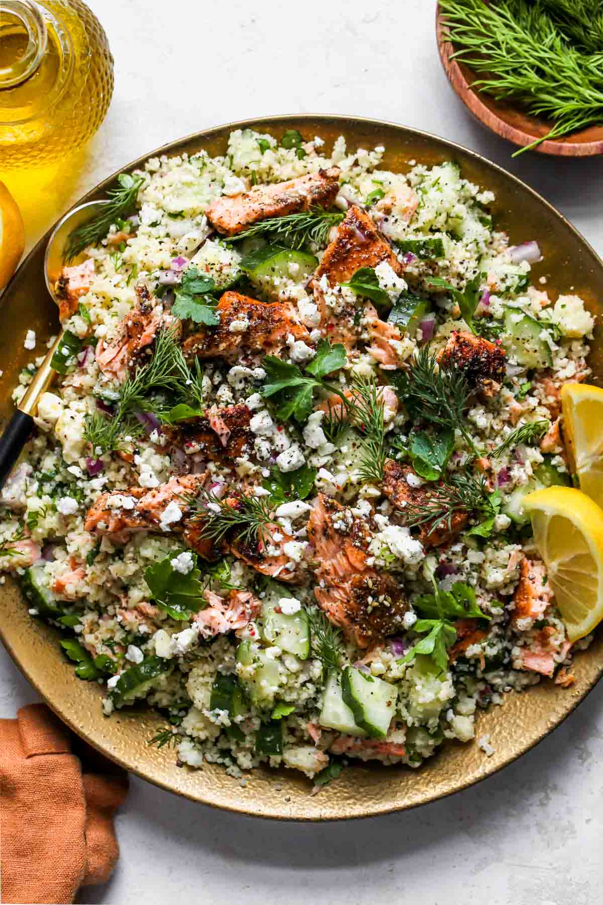

Salmon Couscous Salad

Salmon couscous salad offers a delightful medley of textures that keeps each
bite interesting. The couscous is light and fluffy, providing a tender base that
contrasts beautifully with the flaky, melt-in-your-mouth texture of cooked
salmon. Crisp vegetables like cucumber and bell peppers add a refreshing crunch,
while ngredients such as toasted nuts or seeds introduce a satisfying bite. If
crumbled feta or creamy avocado is included, they lend a rich, velvety element
that complements the salad’s overall lightness.
The flavors of the salad are a perfect balance of richness and brightness. The
salmon brings a buttery, savory depth, enhanced by the aromatic spices or herbs
it may be seasoned with. This is offset by the zesty tang of a lemony dressing,
which ties all the ingredients together with its fresh, citrusy notes. Add-ins
like briny olives, sharp red onions, or sweet cherry tomatoes provide bursts of
flavor, ensuring every forkful is layered, vibrant, and satisfying.
Ingredients
- 1 cup uncooked couscous
- 1 Tbsp. plus 2 tsp. extra-virgin olive oil, divided
- 3/4 tsp. kosher salt, divided
- 1 (12-oz.) fillet salmon, skin-on
- 2 tsp. za'atar spice
- 1/2 English cucumber, sliced into coins and then quartered
- 3/4 cup fresh parsley, roughly chopped
- 1/3 cup fresh dill, finely chopped
- 1/3 cup minced red onion
Feta Dressing
- 1/3 cup extra-virgin olive oil
- 2 Tbsp. fresh lemon juice
- 2 tsp. Dijon mustard
- 2 tsp. honey or maple syrup
- 1 garlic clove, minced
- 1/4 tsp. each kosher salt and black pepper
- 1/3 cup crumbled feta cheese
yields 5 servings
Directions
- Prepare Couscous: In a medium saucepan, bring 1 1/4 cups water, 1 Tbsp. olive
oil, and 1/4 tsp. salt to a boil. Stir in the couscous, cover with a lid, and
remove from heat. Let the couscous steam for 5 minutes. Use a fork to fluff
the couscous and break up any clumps. Transfer to a large bowl to slightly
cool.
- Cook Salmon: Pat salmon dry with a paper towel. Rub with 2 tsp. olive oil,
and season with za'atar spice and 1/2 tsp. salt. You can cook salmon one of
two ways: under the broiler or on the stovetop:
Broil Salmon: Preheat broiler with oven rack 6 inches from heat. Place fillet,
skin side down, on a foil-lined baking sheet. Broil to desired degree of
doneness, 8 to 10 minutes.
Sauté Salmon: Heat 1 to 2 Tbsp. of olive oil in a skillet over medium-high.
Place salmon, skin side-down, in pan and cook for about 3 minutes, until the
flesh turns from translucent to opaque all the way up the sides. Gently flip
salmon (usually a fish spatula, ideally), turn off heat, and cook for another 3
to 4 minutes, or until fully cooked.Once the salmon is cooked, let rest for about
5 minutes before using a fork to flake into small pieces.
- Prepare Feta Dressing: In a medium bowl, combine olive oil, lemon juice, Dijon
mustard, honey, garlic, salt and pepper; whisk to combine. Stir in feta cheese.
- Assemble Salad: To the bowl with cooled couscous, add cucumber, parsley, dill,
and red onion; toss well. Add flaked salmon and dressing; gently stir to
combine. Taste and adjust seasonings as needed. Garnish with extra crumbled
feta and/or herbs, if desired.